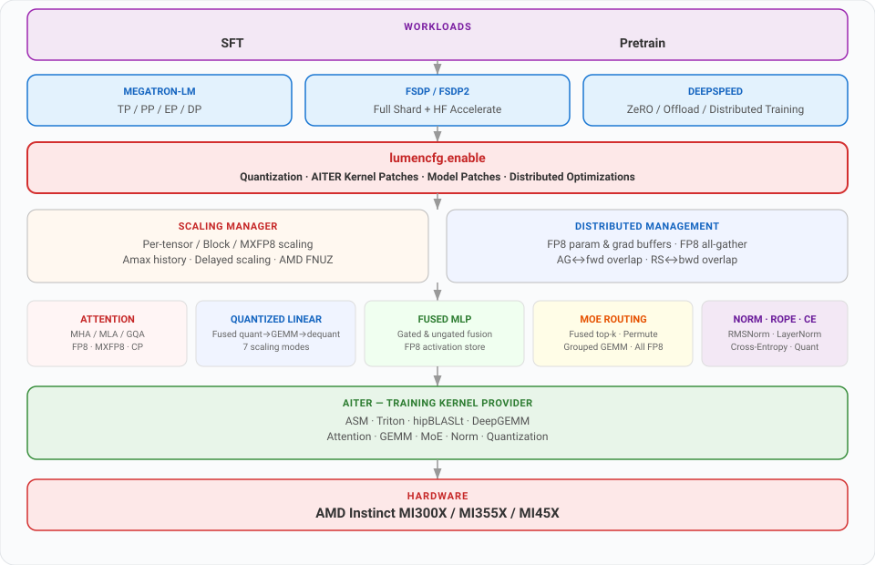

Architecture¶
Lumen owns the quantized training lifecycle and delegates everything else to the training backend. This page describes the layered architecture from workloads down to hardware kernels.
Layered Design¶

Key Components¶
Quantization Lifecycle (lumen/quantize/)¶
The entry point for all quantized training. quant.enable(model) walks a model’s module tree and patches eligible layers with quantized equivalents. QuantConfig provides a unified interface for:
Format selection — FP8 E4M3, E5M2, MXFP8, Hybrid
Scaling strategy — Dynamic, Delayed (with amax history), Blockwise
Activation and gradient quantization — Independent control over forward activations and backward gradients
Operators (lumen/ops/)¶
Stateless functional API backed by AITER. Each operator uses an ASM → CK → Triton fallback chain selected at runtime via ~30 @lru_cache dispatch probes in dispatch.py:
Op |
Source |
AITER Backend Priority |
FP8 Support |
|---|---|---|---|
Quantize |
|
C++ (per-tensor) → Triton (blockwise, MXFP8) |
Core FP8 |
Linear |
|
hipBLASLt → CK → Triton |
7 scaling modes |
Attention |
|
CK (csrc) → Triton |
BF16 / FP8 blockwise / MXFP8 / blockwise2d |
Grouped GEMM |
|
Triton (fused MoE) → sequential |
BF16 + all FP8 modes |
Normalization |
|
ASM → CK → Triton |
Fused norm+quant |
Fused MLP |
|
Triton (fused) → decomposed GEMM |
FP8 activation store |
MoE Routing |
|
ASM (gating) → HIP (permute) → Triton (GEMM) |
BF16 + all FP8 |
RoPE |
|
Triton only |
N/A |
Cross-Entropy |
|
Triton + optional SDMA |
N/A |
SDMA |
|
mori.ccl |
float32 |
Modules (lumen/modules/)¶
nn.Module wrappers that serve as drop-in replacements for standard PyTorch / Megatron layers:
Module |
Source |
TP Support |
FP8 Support |
|---|---|---|---|
|
|
Column-parallel |
All scaling modes |
|
|
Row-parallel |
All scaling modes |
|
|
Column-parallel |
Fused norm+quant |
|
|
— |
BF16 / FP8 / MXFP8 |
|
|
— |
BF16 / FP8 |
|
|
— |
FP8 store |
|
|
— |
FP8 store |
|
|
Col/Row parallel |
All scaling modes |
|
|
— |
Fused quant |
|
|
— |
Fused quant |
|
|
TP AG/RS |
float32 |
|
|
— |
AG/GEMM + GEMM/RS overlap |
Distributed Management¶
Handles FP8-aware parameter lifecycle in distributed settings:
FP8 parameter buffers — Contiguous FP8/BF16 storage for parameters and gradients
FP8 all-gather — Communicates parameters as uint8, achieving ~2× bandwidth saving over BF16
Compute-communication overlap — AG ↔ forward and RS ↔ backward pipelining
Distributed optimizer — FP8 shard + all-gather integration
Project Structure¶
Lumen/
├── lumen/
│ ├── core/ # FP8 dtype helpers, gradient quantization, device detection
│ ├── kernels/ # AITER kernel wrappers (FP8/MXFP8 flash attention impl)
│ ├── ops/ # Stateless ops API — all backed by AITER
│ │ ├── attention/ # MHA/MLA/GQA + Context Parallelism (A2A, P2P)
│ │ ├── quantize/ # Quantized linear, GEMM, quant/dequant ops
│ │ ├── gemm/ # Grouped GEMM, MoE GEMM dispatch
│ │ ├── normalization/ # LayerNorm, RMSNorm (fused FP8 variants)
│ │ ├── mlp/ # Fused gated & ungated feed-forward
│ │ ├── moe/ # Fused routing, sorting, aux loss
│ │ ├── rope.py # Fused RoPE (SBHD, THD, 2D, 3D)
│ │ ├── cross_entropy/ # Vocab-parallel cross-entropy
│ │ └── dispatch.py # ASM → CK → Triton fallback dispatcher (~30 probes)
│ ├── modules/ # nn.Module wrappers (drop-in for Megatron / FSDP)
│ ├── quantize/ # Quantization lifecycle (enable/disable, config, scaling)
│ ├── rl/ # RL training integration
│ └── models/ # Training utilities & model definitions
│ ├── megatron.py # Shared Megatron stack (spec patching, FP8, LoRA)
│ ├── fsdp.py # Shared FSDP stack (FP8, LoRA, state mgmt)
│ ├── llama2/ # LLaMA2 SFT
│ └── llama31/ # LLaMA 3.1 Pretrain
├── examples/ # End-to-end training examples
└── tests/ # Test suite